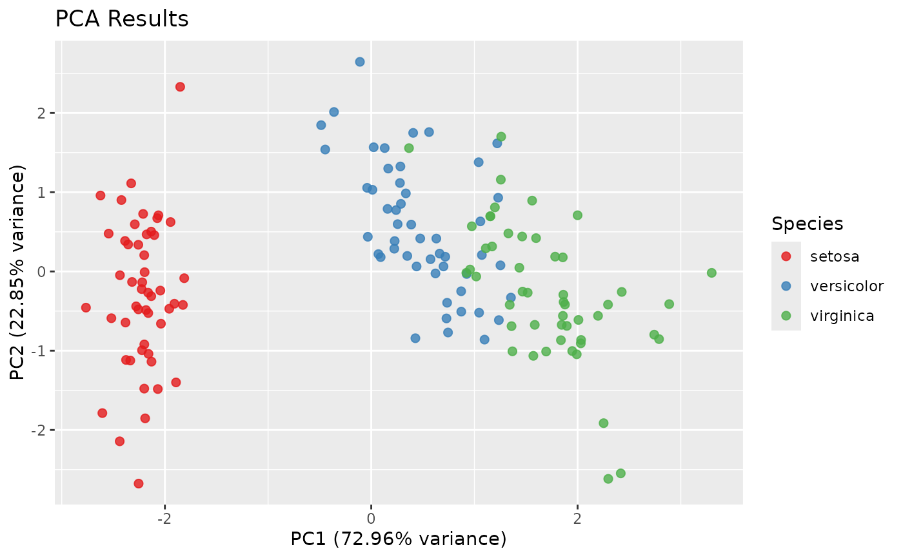

Answers "how much of the spread in these numeric columns lives in a handful
of directions, and which columns drive them?" Runs a PCA on the numeric
columns of data. Non-numeric columns (character, factor, logical, Date,
...) are excluded from the feature set and kept as label candidates; an
explicitly supplied label_col (numeric or not) is likewise excluded from
the features and only used for labeling. Rows with missing values in the numeric columns and zero-variance
columns are dropped before the decomposition; a column counts as
zero-variance when its standard deviation is at most
1000 * .Machine$double.eps (about 2e-13) times its largest absolute
value, so a column that is constant up to floating-point round-off is
dropped too, while small-unit or large-offset columns (timestamps, say) are
kept.
Usage
fs_pca(
data,
num_pc = NULL,
scale_data = TRUE,
center_data = TRUE,
label_col = NULL,
plot = FALSE,
verbose = FALSE
)Arguments
- data
A data.frame or data.table with at least two rows and at least one numeric column.
- num_pc
Number of principal components to retain: a whole number
>= 1, orNULL(the default) to retainmin(2, max_possible).max_possibleismin(nrow - 1, ncol)of the usable numeric data, that is after incomplete rows and zero-variance columns have been dropped. Explicit values larger thanmax_possibleraise an error.- scale_data
Logical; scale numeric columns to unit variance. Cannot be
TRUEwhilecenter_dataisFALSE:stats::prcomp()andbigstatsr::big_scale()treat uncentered scaling differently (the latter ignores it), so allowing it would make the decomposition depend on which engine the data size selected. That combination is an error. DefaultTRUE.- center_data
Logical; center numeric columns. Default
TRUE.- label_col
Optional single string naming a column of
dataused to label and color points. The column is excluded from the PCA features but carried intopca_df. DefaultNULL, which means no labels and therefore no plot.- plot
Logical; if
TRUE, the PC1 vs PC2 scatterplot is printed. DefaultFALSE, unconditionally: it does not depend on whetherlabel_colwas supplied. The plot object is returned in$ploteither way whenever one can be built (see Details).- verbose
Logical; emit progress messages (the non-numeric columns held back as labels, which engine was chosen, and any fallback from 'bigstatsr'). Default
FALSE.
Value
A plain list. fs_pca() is dimensionality reduction rather than
feature selection, so it returns its own PCA structure and not the
fs_result object produced by the package's selection functions. The
components are:
pc_loadings: numeric matrix of variable loadings, one row per surviving numeric feature and one column per retained PC, with the feature names as row names andPC1,PC2, ... as column names.pc_scores: numeric matrix of observation scores, one row per kept observation and one column per retained PC.var_explained: numeric vector of lengthnum_pc, the proportion of total variance carried by each retained PC (see Details, especially for the large-data engine).pca_df: data.table of the scores with the label columns (every non-numeric column, pluslabel_col) bound alongside, restricted to the rows that were kept.meta: list withnumeric_cols(the features actually decomposed),rows_kept(logical vector over the rows ofdata),n_rows_used, andn_cols_used.plot: the ggplot object. Present only when a plot could be built, that is whenlabel_colwas supplied, at least two PCs were retained, and 'ggplot2' is available. Absent otherwise, so test for it with"plot" %in% names(res)rather than assuming it is there.
Details
The caveat is what PCA is. This is unsupervised dimensionality reduction, not feature selection: every component is a linear combination of all the retained numeric columns, chosen without reference to any outcome. A PCA therefore does not shorten the list of variables you have to measure, and the leading components are the highest-variance directions, which need not be the ones related to a response.
Data with fewer than 1e7 cells is decomposed with stats::prcomp(). From
1e7 cells up, bigstatsr::big_SVD() runs on a temporary file-backed matrix
(the backing file is deleted when the call returns) if the suggested package
'bigstatsr' is installed; otherwise the call falls back to prcomp(), which
is reported only when verbose = TRUE.
var_explained reports the proportion of total variance explained by each
retained component under both engines, so it sums to 1 only when every
available component is retained; with the default two components it sums to
the fraction those two capture. The engines obtain that denominator
differently. prcomp() computes every component, so the total is the sum of
all the eigenvalues. big_SVD() computes only the top num_pc singular
values, which are not the whole spectrum, so the total variance is
recovered separately from the column statistics of the (implicitly centered
and scaled) matrix. Under the 'bigstatsr' engine in particular, read the
entries as shares of the whole and never as shares of the components that
happened to be computed.
plot controls printing only, never construction. Whenever a plot can be
built at all (a label_col was supplied, at least two components were
retained, and the suggested package 'ggplot2' is installed) the ggplot
object is returned in $plot, whether or not plot is TRUE. Setting
plot = TRUE additionally prints it, and in that case 'ggplot2' is
required: its absence becomes an error rather than a silently missing
$plot. plot = TRUE without a label_col, or with fewer than two
retained components, warns and skips the plot.
Examples
res <- fs_pca(mtcars, num_pc = 2, label_col = "cyl")
res$var_explained
#> [1] 0.5697822 0.2644102
head(res$pca_df)
#> PC1 PC2 cyl
#> <num> <num> <num>
#> 1: -0.68400200 -1.6918186 6
#> 2: -0.64964186 -1.5108421 6
#> 3: -2.45446503 0.1707165 4
#> 4: -0.25539550 2.3333568 6
#> 5: 1.68827810 0.7361403 8
#> 6: 0.02536833 2.7401361 6
# \donttest{
if (requireNamespace("ggplot2", quietly = TRUE)) {
# plot = FALSE (the default) draws nothing, but $plot is built anyway
res <- fs_pca(iris, label_col = "Species", verbose = TRUE)
print(inherits(res$plot, "ggplot"))
# plot = TRUE draws it as well
res <- fs_pca(iris, label_col = "Species", plot = TRUE)
}
#> Excluding 1 non-numeric column(s) from the PCA features (kept as label candidates): Species
#> Using prcomp for PCA computation.
#> [1] TRUE

# }